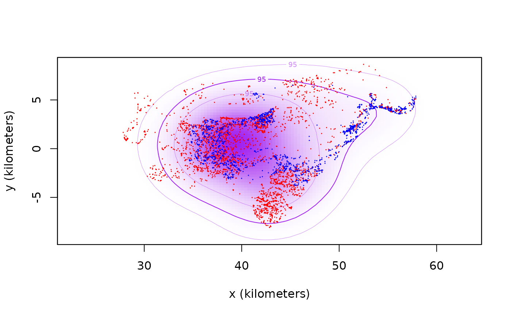

encounter.RdFunctions to calculate encounter probabilities and the conditional location distribution of where encounters take place (conditional on said encounters taking place), as described in Noonan et al (2021).
encounter(object,debias=FALSE,level=0.95,normalize=FALSE,self=TRUE,...)
cde(object,include=NULL,exclude=NULL,debias=FALSE,...)A list of aligned UD objects.
Approximate bias corrections [IN DEVELOPMENT].
Confidence level for relative encounter rates.
Normalize relative encounter rates by the average uncorrelated self-encounter rate.
Fix the self-interaction rate appropriately.
A matrix of interactions to include in the calculation (see Details below).
A matrix of interactions to exclude in the calculation (see Details below).
Additional arguments for future use.
Encounter probabilities are standardized to 1 meter, and must be multiplied by the square encounter radius (in meters), to obtain other values. If normalize=FALSE, the relative encounter rates have units of \(1/m^2\) and tend to be very small numbers for very large home-range areas. If normalize=TRUE, the relative encounter rates are normalized by the average uncorrelated self-encounter rate, which is an arbitrary value that provides a convenient scaling.
The include argument is a matrix that indicates which interactions are considered in the calculation.
By default, include = 1 - diag(length(object)), which implies that all interactions are considered aside from self-interactions. Alternatively, exclude = 1 - include can be specified, and is by-default exclude = diag(length(object)), which implies that only self-encounters are excluded.
encounter produces an array of standardized encounter probabilities with CIs, while cde produces a single UD object.
M. J. Noonan, R. Martinez-Garcia, G. H. Davis, M. C. Crofoot, R. Kays, B. T. Hirsch, D. Caillaud, E. Payne, A. Sih, D. L. Sinn, O. Spiegel, W. F. Fagan, C. H. Fleming, J. M. Calabrese, ``Estimating encounter location distributions from animal tracking data'', Methods in Ecology and Evolution (2021) doi:10.1111/2041-210X.13597 .
Prior to v1.2.0, encounter() calculated the CDE and rates() calculated relative encounter probabilities.
# \donttest{
# Load package and data
library(ctmm)
data(buffalo)
# fit models for first two buffalo
GUESS <- lapply(buffalo[1:2], function(b) ctmm.guess(b,interactive=FALSE) )
# in general, you should use ctmm.select here
FITS <- lapply(1:2, function(i) ctmm.fit(buffalo[[i]],GUESS[[i]]) )
names(FITS) <- names(buffalo[1:2])
# create aligned UDs
UDS <- akde(buffalo[1:2],FITS)
#> Default grid size of 3 minutes chosen for bandwidth(...,fast=TRUE).
#> Default grid size of 2 minutes chosen for bandwidth(...,fast=TRUE).
# calculate 100-meter encounter probabilities
P <- encounter(UDS)
P$CI * 100^2
#> , , low
#>
#> Cilla Gabs
#> Cilla Inf 4.612574e-05
#> Gabs 4.612574e-05 Inf
#>
#> , , est
#>
#> Cilla Gabs
#> Cilla Inf 9.17698e-05
#> Gabs 9.17698e-05 Inf
#>
#> , , high
#>
#> Cilla Gabs
#> Cilla Inf 0.0001528501
#> Gabs 0.0001528501 Inf
#>
# calculate CDE
CDE <- cde(UDS)
# plot data and encounter distribution
plot(buffalo[1:2],col=c('red','blue'),UD=CDE,col.DF='purple',col.level='purple',col.grid=NA)
#> DOP values missing. Assuming DOP=1.
#> DOP values missing. Assuming DOP=1.

# }